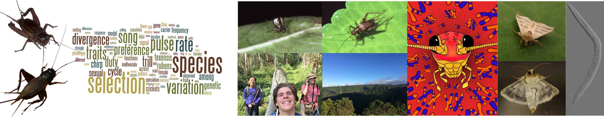

I study how predictable evolution is, using nematodes and the microbes they live with.
Assistant professor of Evolutionary Ecology at the Institute for Biodiversity and Ecosystem Dynamics, University of Amsterdam. My lab combines experimental evolution, population genetics and behavioral experiments in the nematode Caenorhabditis elegans and its microbes.

Host–microbe co-evolution
How the microbes living in and around animals shape adaptation and speciation in their hosts, and the reverse: in experimental evolution lines of C. elegans and in several other systems.
Predicting evolution
How the mechanisms of genetic and phenotypic adaptation in nature and during experimental evolution across heterogeneous environments help explore the predictability of evolution.
All research, including earlier work on crickets and moths → · All publications →
My mission is to understand how adaptation at the level of individuals (phenotypic plasticity), populations (genetic evolution), and communities (ecological sorting), in combination with neutral ecological and evolutionary dynamics, shaped the diversity of life in time and space. I am particularly interested in the predictability of this change, both on the short term, which has important applications in managing agricultural and natural systems, and on the long term, which is relevant for our understanding of the origin and diversification of life on Earth.
Our research and teaching explore the evolutionary consequences of biotic interactions, ranging from sexual communication to animal–microbe co-evolution. I work in teams that study fundamental questions about the complexity and dynamic of life. We engage in transdisciplinary activities to build bridges between science and society. I enjoy discussing the amazing and mostly hidden diversity of life and the value of fundamental science at science fairs, in podcasts, on YouTube and in other media: see outreach.
Interested in joining the lab? I regularly supervise BSc and MSc research projects, and welcome questions about PhD and postdoc opportunities. Contact details are on my UvA profile; see the people page for current and past projects.